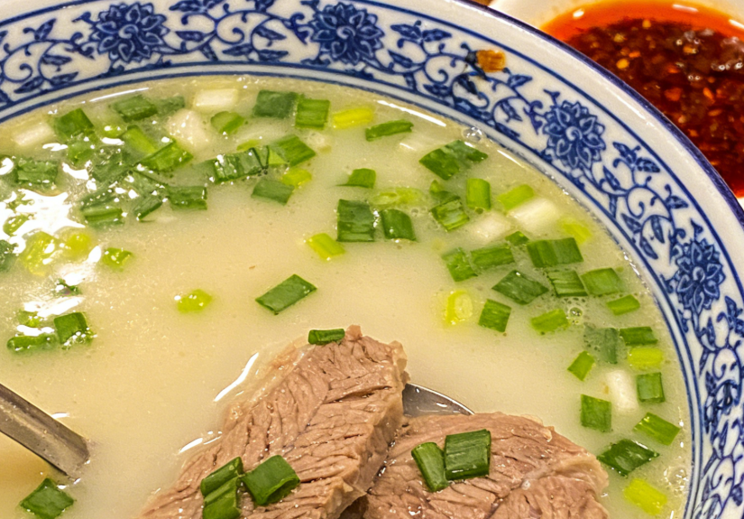
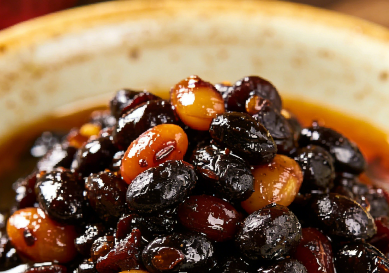
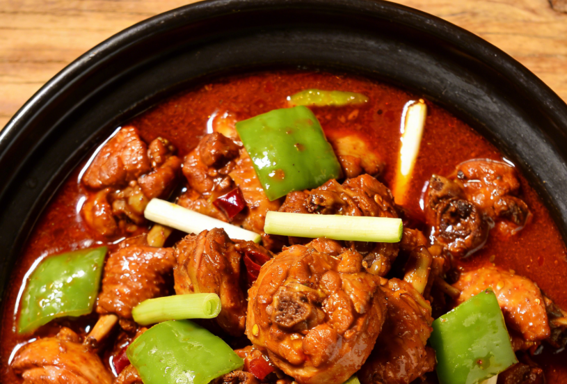
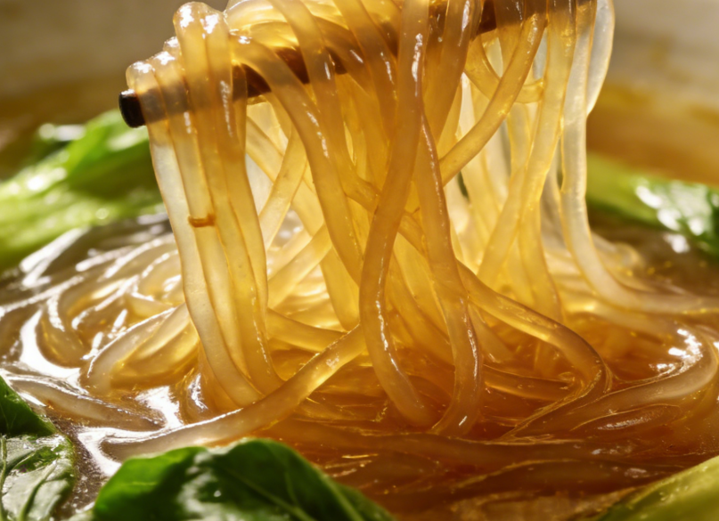

|
Linyi Sa
A savory traditional soup made with chicken, wheat flour, and aromatic spices. This beloved breakfast staple has been warming the hearts of Linyi locals for centuries, featuring a rich, peppery broth that awakens the senses every morning. |
Shandong Jianbing
Thin, crispy pancakes made from grain batter, folded with egg, scallions, and savory sauce. This iconic street food represents the culinary wisdom of Shandong people, where simple ingredients transform into something extraordinary. |

Whole Sheep Soup
A hearty and nourishing soup crafted from carefully selected mountain sheep, slow-simmered for hours with traditional herbs. This dish embodies the warmth and generosity of Yimeng Mountain hospitality. |
|

Eight Treasure Beans
A unique fermented soybean dish featuring eight carefully selected ingredients, creating complex layers of umami flavor. This time-honored delicacy has been a Linyi specialty for over 130 years. |

Linyi Fried Chicken
Tender, golden-fried chicken marinated in a secret blend of local spices, creating a crispy exterior and juicy interior. This beloved dish showcases the bold flavors characteristic of Shandong cuisine. |

Sweet Potato Noodles
Hand-made noodles crafted from fresh sweet potato starch, known for their translucent appearance and delightfully chewy texture. Often served in hot pot or stir-fried with local vegetables and mountain mushrooms. |
"Food is the paramount necessity of the people. Linyi's cuisine tells the story of its land, its people, and its centuries of culinary heritage." — A tribute to Linyi's gastronomic tradition